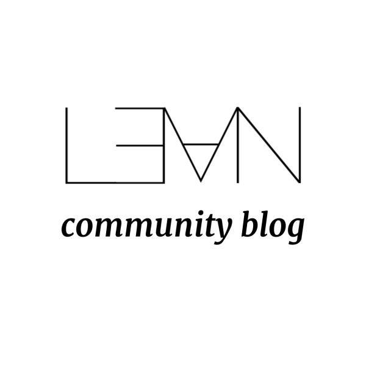
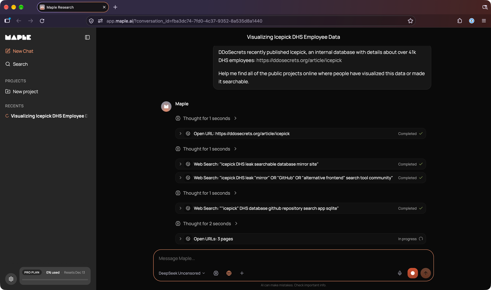
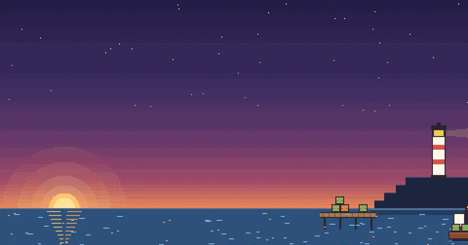
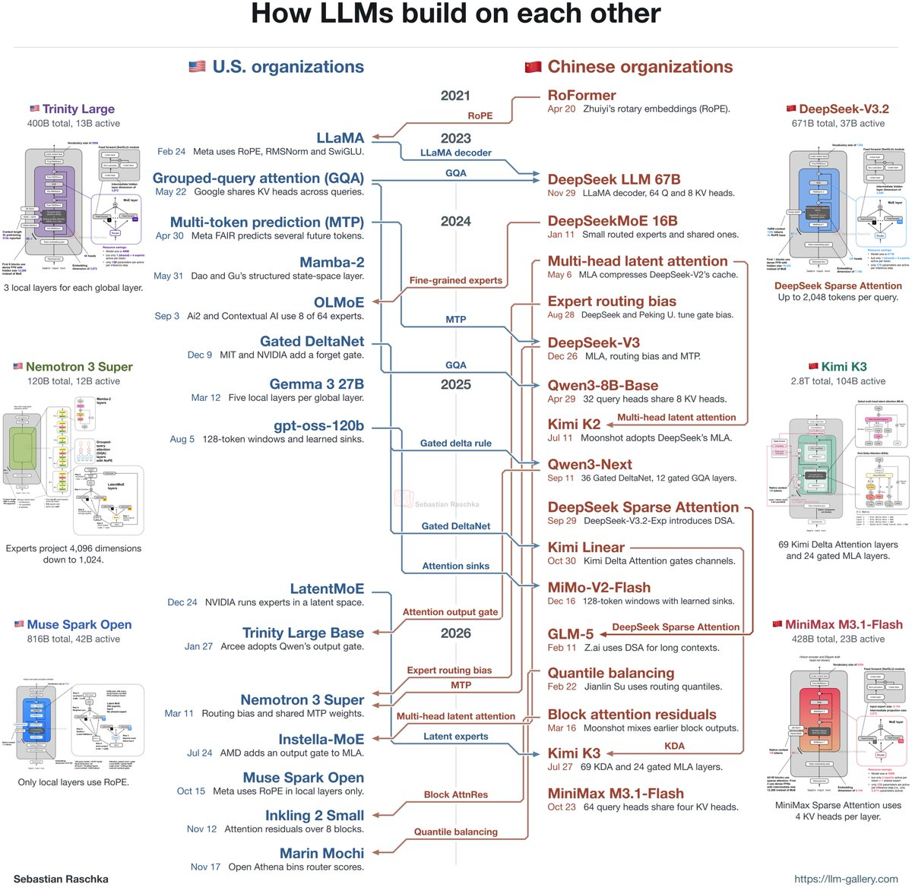

01
OpenAI 介绍针对对抗性蒸馏的防御措施

OpenAI 介绍针对对抗性蒸馏的分层方案，结合模型训练、防护、检测与执行措施，防止能力提取。模型输出可能被用于向其他系统转移能力，使这一问题具有实际意义。官方摘要展示的是防御策略，并非证明提取已被阻止的量化结果，也反映出模型访问治理日益结合技术与执行机制。
每天一次，过滤 AI 噪音
OpenAI 介绍针对对抗性蒸馏的分层方案，结合模型训练、防护、检测与执行措施，防止能力提取。模型输出可能被用于向其他系统转移能力，使这一问题具有实际意义。官方摘要展示的是防御策略，并非证明提取已被阻止的量化结果，也反映出模型访问治理日益结合技术与执行机制。

OpenAI 推出 MedChemBench，评估 AI 对分子结构的理解、基于实验依据的推理，以及早期药物发现中的化合物选择。它将重点从通用聊天能力转向科学工作流中的具体决策。实际价值取决于任务能否反映研究约束并改善实验选择；该描述并不能证明临床获益或药物研发成功。

Eugene Yan 通过拆解十二项基准，讨论公开评测的机制、失效方式及改进方向。在新模型不断发布、开发者需要将成绩转化为采购和部署决策时，这类方法论尤其重要。文章关注如何理解分数以及应该追问什么，是具体榜单结果的补充，而非另一份排名或对公开评测的全面否定。

Lean 与 Mathlib 社区联合声明，已验证 Levent Alpöge 发布的、包含 1700 万行 Lean 代码的黎曼猜想证明。检查覆盖可重复编译、定理与 Mathlib 标准表述的一致性，以及多个独立证明检查器的验证。社区期待进一步解释证明中的数学思想；机器验证与人类可理解的数学解释仍是不同层面的成果。
Hacker News 的讨论让 SimpleBench 再受关注。该评测包含 200 多道选择题，涉及时空推理、社交理解及语言陷阱。网站报告九名参与者的人类基线为 83.7%，列出的领先模型 Claude Fable 为 81.9%。样本规模和任务设置必须纳入解读；这些结果揭示能力不均衡，不能单独决定模型总体实用性。

Micah Lee 的指南介绍通过 Maple 的聊天、桌面及 API 界面使用开放权重模型，并将可信执行环境作为其隐私机制。它说明使用开放模型不必自行购置高性能硬件，同时需要权衡易用性、词元成本和对托管架构的信任。文中的隐私主张不等同于独立安全审计。
Anthropic 发布 CEO Dario Amodei 关于公司首次公开募股的讲话，以创始团队希望强大 AI 造福人类的理念阐述这一节点。这是前沿模型公司的重要资本市场事件，在 X 上获得大量关注。所收集内容能够支持 IPO 及其使命表述，但不足以判断后续股价、估值或上市压力对公司决策的影响。
Hugging Face 的 Thomas Wolf 转发了 Thinking Machines 关于 Inkling 2 Mini 的公告，称其采用循环 Transformer 架构，并回应用户认为 5940 亿参数的 Inkling 2 Small 过大的反馈。这一方向值得开放模型生态关注，但所收集片段未说明 Mini 的确切规模、许可证、评测成绩或部署要求。

Runway 表示，自十月初以来，Runway App Studio 合并的几乎所有拉取请求都由智能体编写。配套系统负责审查修改、在浏览器中测试，并在高风险决策时引入工程师。关键经验是围绕代码生成建立审查与测试流程。这属于公司对特定产品的实践报告，不能直接推广为所有工程任务均可自主完成。
Thomas Wolf 表示，Hugging Face 从夏季开始运营自建内容分发网络，月传输量接近 1 EB，吞吐约为每秒 420 GB、每秒 8 万次请求。这些数字显示 AI 文件分发对基础设施经济性的压力。它们是 Hugging Face 的运营披露，不能直接等同于模型使用量、训练活动或独立开发者数量。

Google 宣布将 Gemini 3.5 Transcribe 的语音编辑能力引入 Gemini API，让开发者构建通过语音编辑、改写和翻译已有文本的应用。这项技术也用于 Gboard 的 Rambler 和 macOS 上的 Gemini。关键变化是交互能力进入开发者接口；所收集公告未说明价格、延迟承诺、语言覆盖或生产可靠性数据。

Google 表示 Gemini 4 Hydrogen 已上线 Gemini 应用与搜索，定位于速度和日常任务，并强调在智能体工作流中的高效执行。通过既有产品分发使其影响超出开发者评测范围。不过公告未提供量化延迟或成本对比，因此效率优势仍需结合具体任务验证。

Google DeepMind 展示了一个据称由 Gemini 4 Neon 在 Antigravity 中编写的滑雪模拟器，使用真实勃朗峰地形、自定义着色器，以及实时雪痕与雪崩效果，未采用预制三维模型。它展示了代码生成进入交互图形的潜力，但作为精选演示，不能证明跨提示词可重复性、开发耗时或同任务下的模型优劣。

Pika 宣布上线 Seedance 2.5 Flash，重点面向广告素材变化、批量实验等需要多次生成的场景。公告列出最长 30 秒、480p 或 720p 输出，以及最多 10 张图片、5 段视频和 5 段音频参考输入。明确的规格有助于判断工作流适配度，但尚无对比质量数据或定价信息。

Runway 将 Runway Agent 描述为通过简短对话创作视频的方式，体现了以创作目标和对话迭代组织生成流程的方向。这与智能体和生成式媒体的融合有关。但该帖子属于产品展示，并未说明可用控制项、复杂需求下的可靠性、定价或仍需多少人工编辑。

Nathan Lambert 分享新幻灯片，梳理后训练领域的重要开放问题及其发展路径，并表示这些内容大体反映 Trillium Labs 的目标，欢迎公开研究相关问题的团队交流。这是一项研究议程信号，而非新的评测成绩，其价值在于后训练日益重要之际明确尚未解决的问题。

Sebastian Raschka 认为，美国与中国的开放权重模型通过竞争相互促进，闭源模型的质量和价格也受益于开放替代方案。这条广受关注的帖子属于生态判断，并非因果研究。它强调开放权重模型可影响部署选择与议价能力，即使团队最终使用的是闭源服务。

Google DeepMind 分享 Koray Kavukcuoglu 的观点：不会有一个测试或榜单能够单独证明通用人工智能到来，应关注模型在日常任务中是否减少能力落差并提高可靠性。这为看待亮眼评测和演示提供了补充视角，但仍是高管的判断框架，并非经过验证的测量标准。